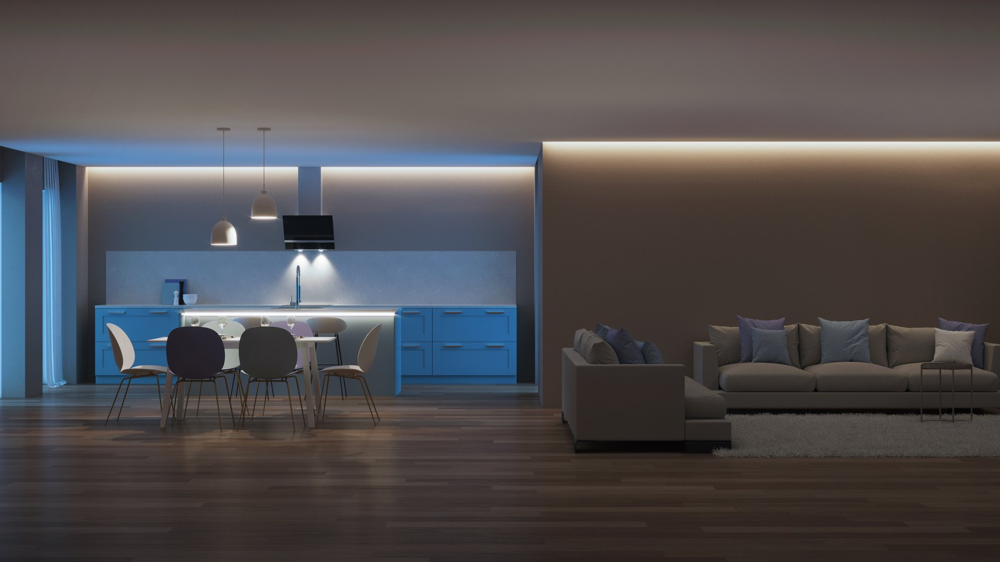

Projeto Marina Paiva
Cozinha, sala de jantar e estar integradas em um único espaço social — do primeiro esboço à montagem final, com projeto assinado pela arquiteta Camila Duarte.
Três ambientes, um só espaço de convívio
A cliente Marina Paiva procurou a Live Ambientes Recreio buscando transformar três ambientes independentes — cozinha, sala de jantar e sala de estar — em um único espaço social, sem abrir mão de área de armazenamento nem da estética clara que já usava no restante do apartamento.
O desenvolvimento ficou a cargo da arquiteta Camila Duarte, parceira técnica da loja, que iniciou o trabalho com um estudo volumétrico do apartamento para validar a reorganização do fluxo entre cozinha, jantar e estar. Em seguida, a proposta ganhou os primeiros esboços de marcenaria — croquis de linha que testaram o posicionamento de ilha, bancada e estante antes de qualquer decisão de material.
Com o layout validado, o projeto passou para a etapa de renderização: primeiro em clay, só volumetria e luz, para calibrar pé-direito e iluminação embutida; depois com a paleta final de cores e materiais aplicada, permitindo que Marina aprovasse cada acabamento — do tom da marcenaria aos puxadores — antes do início da produção.
Aprovado o projeto, a produção seguiu o padrão Live Ambientes: 100% MDF de alta espessura e ferragens importadas, com corte e usinagem sob medida. A montagem foi realizada por equipe própria, com acompanhamento técnico da arquiteta para conferir alinhamento, iluminação e instalação dos eletrodomésticos.
O projeto foi entregue em 2025 e hoje conta com os 7 anos de garantia padrão da Live Ambientes e acompanhamento de pós-venda, incluindo revisão técnica após os primeiros meses de uso.
Como o projeto avançou
Projeto & design
Briefing, estudo volumétrico, esboços e renderização até a aprovação final do cliente.
Produção
Corte e usinagem em MDF de alta espessura, com ferragens importadas.
Montagem
Instalação técnica no local por equipe própria, com acompanhamento da arquiteta.
Pós-venda
7 anos de garantia e revisão técnica após os primeiros meses de uso.
Arquiteta responsável
Camila Duarte
Formada em Arquitetura e Urbanismo pela UFRJ, com pós-graduação em design de interiores e mais de 12 anos dedicados a projetos residenciais no Rio de Janeiro. Parceira da Live Ambientes desde 2022, assina o desenvolvimento técnico e a compatibilização dos projetos entre desenho, marcenaria e obra.
Da concepção à entrega
Esboço, volumetria, renderização e cena final — acompanhe a evolução do projeto em ordem cronológica.
{kind=link}
{kind=link}
{kind=link}
{kind=link}
{kind=link}
{kind=link}
{kind=link}
{kind=link}
{kind=link}
{kind=link}
{kind=link}